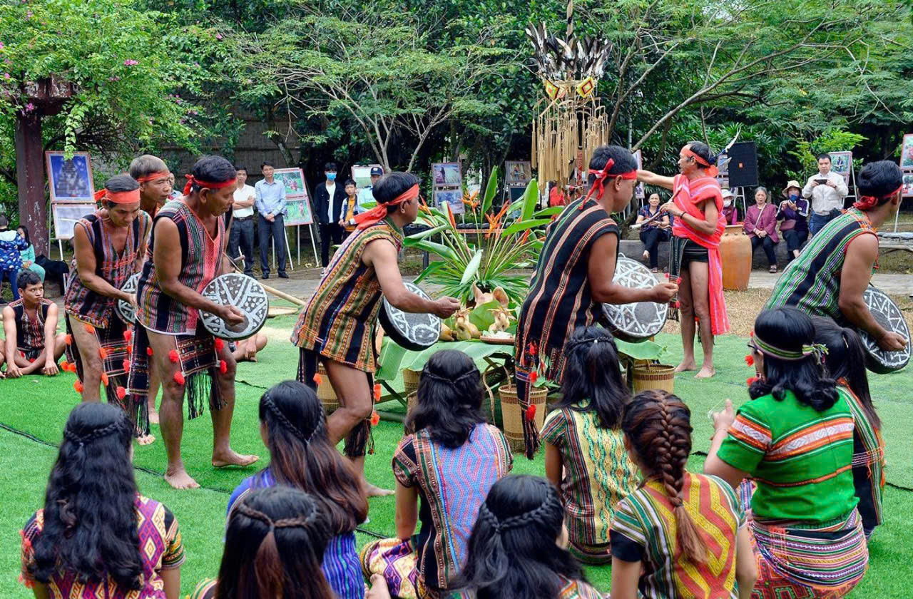

Chất liệu
Trang phục được làm từ vải dệt tay, sử dụng sợi bông tự nhiên,vải thổ cẩm tự dệt, với nguyên liệu gốc từ bông (cây bông vải) và vỏ cây rừng (trước đây).
Dịp mặc
Người S'tiêng mặc trang phục truyền thống trong các lễ hội, cưới hỏi và sinh hoạt cộng đồng,nghi lễ truyền thống hoặc khi đón khách quý để tôn vinh bản sắc văn hóa.
Ý nghĩa
Hoa văn trên trang phục phản ánh đời sống, phong tục và văn hóa dân tộc,là biểu tượng văn hóa đặc trưng, phản ánh tín ngưỡng, bản sắc riêng và đời sống gắn liền với núi rừng.